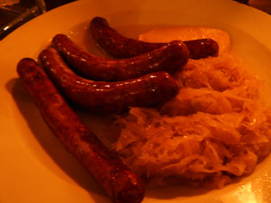
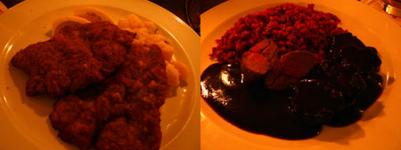

Obermaier
Reichenbergerstrasser, Kreuzberg
We had our first proper meal in Germany at Obermaier, a rustic Austrian restaurant two blocks from our chic apartment in Kreuzberg, an area full of Turks, gays, and artists. We hadn’t eaten properly since Thursday; needless to say we were starving for a plate of hot food.
Our apartment-swap partner, Florian, recommended this place, and thank goodness he did, because we never would have expected to find such a nice restaurant in this part of the nabe, where there is little other than ugly apartment buildings and kebab stands. Had the weather been warmer, we could have dined outside in the lovely garten. Maybe it will warm up by the end of the week.
Our waitress was pretty and spoke good English. We could have figured out most of the menu based on our cursory knowledge of German and a food glossary I printed from the Internet. Nevertheless, she was helpful. We started with a plate of bratwurst and sauerkraut (6,5 €). She seemed to discourage us from ordering it—maybe Germans don’t really eat appetizers like we do? But we were starving, and I wanted sausage and kraut, so we persisted. It was perfect. The wurst was hot and savory, the kraut briny and tender. I would have been satisfied with another plate of this and my half liter of Bavarian beer (2,8 €).

For a main course, I had wiener schnitzel! I actually had to look it up. Did you know it’s nothing but a breaded veal cutlet? I figured it was some huge sausage, what with the way Americans like to make fun of it. It tasted just as it looks—like a breaded cutlet. It was good but not memorable (11,50 €). The highlight of the main was my excellent side of half-mashed, cold potato salad. Nathan had venison with spaetzle (13,50 €). The venison was served in a dark, rich sauce flavored with mysterious German spices. He loved his venison, but he said the spaetzle just wasn’t worth eating. It did taste slightly of hoof.

After waiting about 45 minutes for the check while our waitress read Der Spiegel, we weren’t interested in dessert or coffee, so we paid our tiny check and headed to the bar.
Comments
Wow! Wish I was with you! The food looks lovely. Try Viener Schnitzel again somewhere else. I have had it in Germany and thougt it outstanding! Love ’ya
looks delicious! eat a weiner for me!
Add a comment